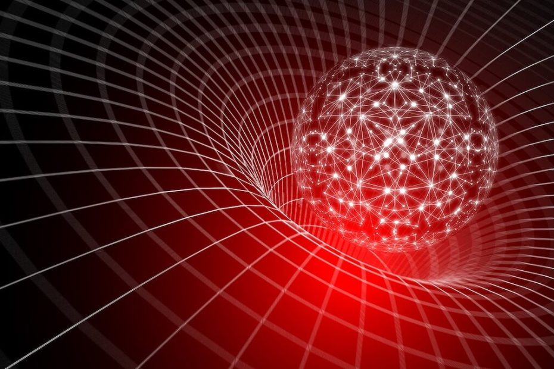

ညဖက် မိုးကောင်းကင်ကို မော့ကြည့်လိုက်ရင် မစ်ကီးဝေး ဂလက်ဆီ အတွင်းက ကြယ်တွေ မရေမတွက်နိုင်အောင် တွေ့ကြရမှာ ဖြစ်ပါတယ်။ အားကောင်းတဲ့ တယ်လီစကုပ် မှန်ပြောင်းတွေနဲ့ ကြည့်မယ်ဆိုရင် ကြယ်တွေတင် မကပဲ မစ်ကီးဝေး ဂလက်ဆီ အပြင်ဖက်က ဂလက်ဆီ တွေကိုပါ တွေ့မြင်ကြရမှာ ဖြစ်ပါတယ်။
ဒါပေမယ့် ဒီ ဂလက်ဆီ တွေရဲ့ အဆုံးမှာ ဘာရှိနေ မလဲ။ တနည်းအားဖြင့် စကြာဝဠာရဲ့ အဆုံးမှာ ဘာရှိနေမလဲ။ ဒီ ဂလက်ဆီတွေ အားလုံး လွန်သွားပြီး တဲ့နောက် မှာ တခြား မထင်မှတ် ထားတာတွေ ရှိနေမလား။ ဥပမာ ကျွန်တော်တို့ စကြာဝဠာကြီး တစ်ခုလုံးဟာ black hole တွင်းနက်ကြီး တစ်ခုရဲ့ အတွင်းထဲမှာ ဖြစ်တည်နေတာမျိုးပေါ့ဗျာ။
Black hole တွေ ဆိုတာ အလွန်များတဲ့ ဒြပ်ထုတွေ အလွန် အင်မတန် သိပ်သည်း မိရာကနေ ဖြစ်ပေါ်လာကြတဲ့ ဆွဲငင်အား အလွန် များတဲ့ ရပ်ဝန်းတွေ ဖြစ်ကြပါတယ်။ ဒီလို ဆွဲငင်အား များလွန်းတာမို့ သူတို့ ပတ်ဝန်းကျင်က ဟင်းလင်းပြင် နဲ့ အချိန် (space time) ကို ပုံပျက်ပြီး လိမ်ကောက် ခွေခေါက်သွားအောင် ပြုလုပ်ပစ်လိုက် ကြပါတယ်။ ဒီလို ဆွဲအားများလွန်းတာမို့ အလင်းတောင်မှ လွတ်အောင် ရုံးထွက်နိုင်စွမ်း မရှိ တော့ပါဘူး။
အတိတ် တချိန်တုန်းက ကျွန်တော်တို့ ကမ္ဘာဟာ တွင်းနက်ကြီး တစ်ခုရဲ့ အတွင်းထဲကို ကျရောက်သွားပြီး လက်ရှိ ကာလ ကျွန်တော်တို့တွေ အားလုံးဟာ ဒီ တွင်းနက်ကြီးရဲ့ အတွင်းထဲမှာ ဆက်လက် ရှင်သန် နေကြတာမျိုးရော မဖြစ်နိုင်ဘူးလားဗျာ။
University of Rhode Island က black hole ကျွမ်းကျင်သူ ရူပဗေဒ ပညာရှင် Gaurav Khanna ကတော့ ဒီလိုသာ တွင်းနက် တစ်စင်းက ကမ္ဘာကို ဝါးမျိုခဲ့မယ် ဆိုရင် ကြုံတွေ့ရင်ဆိုင်ရမယ့် ဆွဲငင်အား စက်ဝန်းဟာ အလွန် အင်မတန် ပြင်းထန်တာမို့ ဆိုးရွားတဲ့ ရလဒ်တွေကို ကြုံတွေ့ ခဲ့ရမှာ ဖြစ်တယ်လို့ ဆိုပါတယ်။
ကမ္ဘာက တွင်းနက်ကြီးရဲ့ ဆွဲအားကြောင့် တွင်းနက်အနီးကို ကပ်သွားမယ် ဆိုရင် ကမ္ဘာပေါ်က လူတွေရဲ့ အချိန်ဟာလဲ နှေးသွားမှာ ဖြစ်ပါတယ်။ ပြီးတော့ တွင်းနက်ရဲ့ အရွယ်အစားပေါ် မူတည်ပြီး ကမ္ဘာဟာလဲ ခေါက်ဆွဲဖတ် လို ဆွဲဆန့် ခံရမှာ ဖြစ်ပါတယ်။
ဒီ ဒါဏ်တွေကို ခံနိုင်လို့ တွင်းနက်ထဲ ဝင်သွားပြီ ဆိုပါစို့။ ကမ္ဘာဟာ တွင်းနက်ရဲ့ ဗဟိုမှာ ရှိတဲံ Singularity ခေါ် “ဧကမှတ်” ဆီကို ဦးတည် ဝင်ရောက်သွားမှာ ဖြစ်ပါတယ်။ ဒီအခါ ဒီ Singularity အနီးမှာ ဖြစ်ပေါ်နေတဲ့ ပြင်းထန်တဲ့ ဖိအားနဲ့ အပူချိန် တို့ကြောင့် ကမ္ဘာဟာလဲ လောင်မြိုက်ပြီး ပြာဖြစ်သွားမှာ ဖြစ်ပါတယ်။
ဒါ့ကြောင့်မို့ ကမ္ဘာဟာ တစ်ချိန်တုန်းက အတိတ်ကာလမှာ တွင်းနက်ကြီး တစ်ခုရဲ့ ဝါးမျိုခြင်း ခံခဲ့ရ ပြီးဖြစ်တယ်ဆိုတဲ့ စိတ်ကူးယာဉ် မှုကို မေ့ပစ်လိုက် နိုင်ပါတယ် လို့ Gaurav Khanna က ရှင်းပြပါတယ်။
ဒါပေမယ့် ကမ္ဘာက တွင်းနက်ကြီး တစ်ခုအတွင်းမှာ ရှိနေနိုင်တဲ့ နောက်တနည်းတော့ ရှိပါသေးတယ်။ ဒါက ဘာလဲဆိုတော့ ကမ္ဘာ အပါအဝင် စကြာဝဠာ ကြီး တစ်ခုလုံးဟာ တွင်းနက်ကြီးရဲ့ အတွင်းမှာ ဖြစ်တည် မွေးဖွားလာခဲ့တာပဲ ဖြစ်ပါတယ်။
Black hole တစ်ခုရဲ့ ဗဟိုက ဧကမှတ် (Singularity) ဟာ Big Bang နဲ့ ဆင်ဆင် တူပါတယ်။ ဘာနဲ့ တူလဲ ဆိုတော့ စကြာဝဠာကို အချိန် ပြောင်းပြန် ပြန်ရစ်လိုက်တဲ့ အခါ ဖြစ်ပေါ်လာပုံနဲ့ တူညီနေပါတယ်။
Big Bang က မူလ အမှတ်တစ်ခုကနေ ပြန့်ကား ထွက်လာချိန်မှာ black hole ကတော့ ပြန့်ကားနေရာကနေ တစ်နေရာထဲမှာ သွားစုတာ ဖြစ်ပါတယ်။ ဒီတော့ ဒီနှစ်ခုက တစ်ခုနဲ့ တစ်ခု ပြောင်းပြန်လို ဖြစ်နေပါတယ်။
Big Bang ဘယ်လိုစဖြစ်လာလဲ ဘယ်သူမှ မသိပါဘူး။ သီအိုရီ တစ်ခုကတော့ Big Bang ဟာ သူ့ထက် ကြီးတဲ့ စကြာဝဠာ ထဲမှာ တည်ရှိတဲ့ black hole တစ်ခုရဲ့ ဧကမှတ် (singularity) ကနေ စတင် မွေးဖွား လာခဲ့တာလို့ ဆိုပါတယ်။ အကယ်လို့ ဒီ သီအိုရီသာ မှန်ခဲ့မယ် ဆိုရင် ကျွန်တော်တို့ရဲ့ စကြာဝဠာဟာ သူ့ထက်ကြီးတဲ့ စကြာဝဠာ အတွင်းထဲက တွင်းနက်တစ်ခုရဲ့ အတွင်းထဲမှာ ဖြစ်တည်နေတာ ဖြစ်နေပါလိမ့်မယ်။
ဒီ သီအိုရီကို Schwarzschild cosmology လို့ အမည် ပေးထားပါတယ်။ ဒီ သီအိုရီ အရဆို စကြာဝဠာ တွေဟာ တစ်ခုထဲမှာ တစ်ခု ထပ်ပြီး ဖြစ်ပေါ်နေတာ ဖြစ်သလို စကြာဝဠာ တစ်ခု အတွင်းထဲ မှာလဲ စကြာဝဠာ တွေ အများအပြား တည်ရှိ နေနိုင်ပါတယ်။ (စကြာဝဠာ ထဲမှာ တွင်းနက်တွေလဲ အများအပြား ရှိတာမို့ ဒီ တွင်းနက်တွေ အတွင်းမှာ နောက်ထပ် စကြာဝဠာတွေ အများအပြား ရှိနေမှာ ဖြစ်ပါတယ်။)
နောက်ပြီး တွင်းနက်ထဲ ဝင်သွားမယ် ဆိုရင် ဒီ တွင်းနက်ထဲက စကြာဝဠာ ထဲမှာ ရောက်သွားမလား ဆိုတဲ့ မေးခွန်းကလဲ ပေါ်လာပါတယ်။ ဒီမေးခွန်း ကိုတော့ ဘယ်သူမှ မဖြေနိုင် ပါဘူး။
ဒါပေမယ့် သေခြာတာ တစ်ခုကတော့ ဒီ သီအိုရီကို ဘယ်တော့မှ သက်သေ ပြနိုင်မှာ မဟုတ်ဘူး ဆိုတာပါပဲ။ ဘာ့ကြောင့်ဆို တွင်းနက်ရဲ့ event horizon ခေါ် ပြန်လမ်းမဲ့ နယ်စည်းကို ကျော်သွားမိတဲ့ သိပ္ပံ ပညာရှင် တစ်ယောက်အနေနဲ့ ဒီဖက်ကို ပြန်လာပြီး သူ့ရဲ့ တွေ့ရှိချက်တွေကို ပြန်ပြောဖို့ ဘယ်လိုမှ မဖြစ်နိုင် လို့ပါပဲ။
ဒါပေမယ့် အကယ်လို့သာ ကျွန်တော်တို့ရဲ့ စကြာဝဠာဟာ တွင်းနက် တစ်ခုအတွင်းမှာ ရှိနေမယ် ဆိုရင် ဒီ တွင်းနက်ဟာ အရွယ်အစား အလွန် ကြီးမားတဲ့ တွင်းနက် တစ်ခုပဲ ဖြစ်ပါလိမ့်မယ်။ အရွယ်အစား သေးငယ်တဲ့ တွင်းနက်တစ်ခုသာ ဆိုရင် ဒီ တွင်းနက်ရဲ့ ဆွဲငင်အား သက်ရောက်မှုကို သတိပြုမိ ကြမှာ ဖြစ်ပါတယ်။ အခုထက်ထိ ဒီလို ထူးခြားတဲ့ ဆွဲငင်အား သက်ရောက်မှုကို သိပ္ပံ ပညာရှင်တွေ မတွေ့ရှိ ရသေးတာမို့ ကျွန်တော်တို့ ဖြစ်တည်တဲ့ တွင်းနက်ရဲ့ အရွယ်ဟာ အလွန် အင်မတန် ကြီးမားလိမ့်မယ်လို့ ပြောလို့ ရပါတယ်။
ဒီ တွင်းနက်ထဲ ရောက်နေတဲ့ သူတွေ အတွက်ကတော့ ဒီ တွင်းနက်ရဲ့ ပြင်ပမှာ စကြာဝဠာ တစ်ခု ရှိသေးတယ်၊ တနည်းအားဖြင့် ကျွန်တော်တို့ စကြာဝဠာရဲ့ အပြင်မှာ နောက်ထပ် စကြာဝဠာ တစ်ခု ထပ်ရှိသေးတယ် ဆိုတာကို ဘယ်လိုမှ သိနိုင်မှာ မဟုတ်ပါဘူးလို့ ပညာရှင် တွေက ထောက်ပြ ကြပါတယ်။
Ref: Could Earth be inside a black hole? | Live Science
စကြာဝဠာဟာ black hole တွင်းနက်တစ်ခုအတွင်းမှာ တည်ရှိနေတာလား

June 20, 2023
Other Posts
- ဗုဒ္ဓဟူးဂြိုဟ်ရဲ့ အမြှီး
- ကြယ်တွေနဲ့ ဂလက်ဆီတွေ ဘယ်သူအရင် စဖြစ်လဲ
- အာကာသထဲကို ဘယ်လောက် ဝေးဝေးထိ မြင်နိုင်သလဲ
- မျက်လုံးပုံ ဂလက်ဆီကြီး
- လူတိုင်း ဖတ်သင့်တဲ့ အာကာသနှင့် စကြာဝဠာ ဆိုင်ရာ စာအုပ် ၁၀ အုပ်
- ဆယ်ကျော်သက် မိန်းကလေးတွေ တီထွင်လိုက်တဲ့ အိမ်ယာမဲ့တို့အတွက် ရွှေ့ပြောင်းတဲအိမ်
- ဆေးတစ်လုံးထိုးရုံနှင့် ကင်ဆာပျောက်အောင် ကုနိုင်တော့မည်
- အင်္ဂါဂြိုဟ် ပေါ်က စာအုပ် ကျောက်ဖြစ်ရုပ်ကြွင်းလား
- ဂျပန် လဆင်းယာဉ် ပျက်ကျ
- အခြားဂြိုဟ်တွေပေါ် လူသားတွေခြေချနိုင်မယ့်အချိန်ကို နာဆာပညာရှင်တွေ ခန့်မှန်း